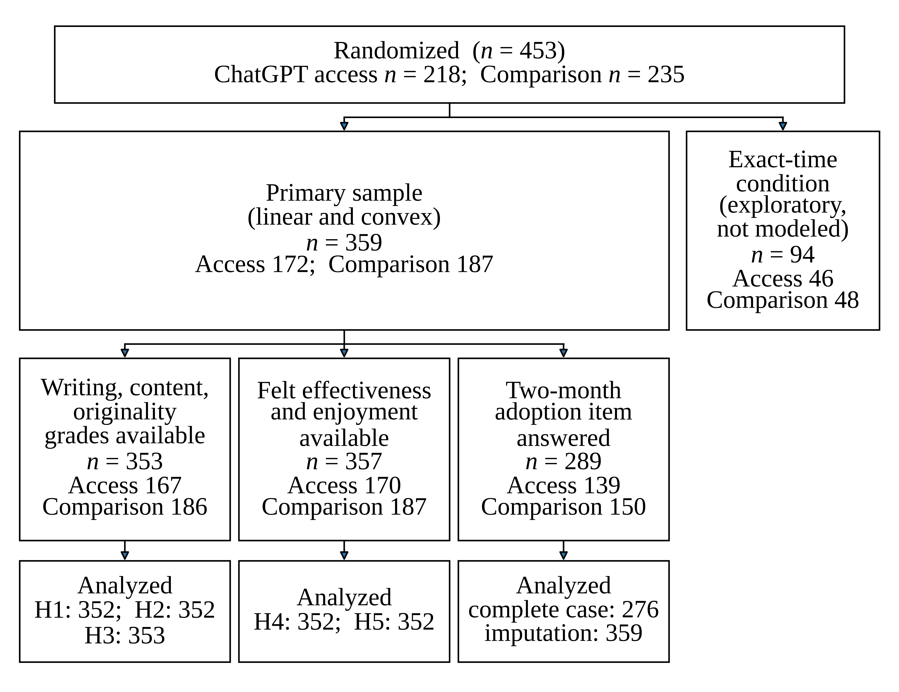
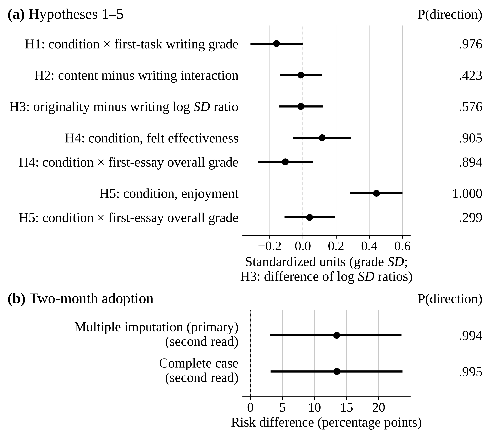

Summary
Generative writing tools are entering professional work, and their effects differ across people. I reanalyze a published online randomized experiment in which college-educated professionals in six writing-intensive occupations completed two incentivized writing tasks, and a randomly assigned half were given access to ChatGPT before the second task (Noy & Zhang, 2023a). I ask whether access weakens the link between first-task and second-task writing grades, whether that weakening is stronger for writing than for content, whether access narrows differences between people more for originality than for writing quality, and how access relates to felt effectiveness and enjoyment on the task. Two-month workplace use of ChatGPT is a secondary outcome.
I fit Bayesian regression models with weakly informative priors to the linear and convex incentive conditions. Each estimate is a posterior median with a 95% equal-tailed credible interval and the posterior probability of the predicted direction, P(direction), with no decision cutoffs. Under access, second-task writing grades depended less on first-task grades, −0.159 [−0.317, −0.002], with P(direction) = .976. Access was associated with higher enjoyment, 0.44 [0.29, 0.60], with P(direction) = 1.000. After a disclosed code correction, two-month workplace use of ChatGPT was 13.4 [3.0, 23.5] percentage points higher under access, with P(difference > 0) = .994.
Methods
Participants were college-educated professionals recruited on Prolific in marketing, grant writing, consulting, data analysis, human resources, and management. Of the 453 randomized participants (218 with ChatGPT access and 235 in the comparison condition), 359 were in the primary sample (the linear and convex incentive conditions: 172 access, 187 comparison), and 94 were in the exact-time condition. Access condition was assigned after the first task. Graders who were not told the writer’s condition rated each essay on a 1–7 scale for overall quality, writing quality, content quality, and originality.
I fit confirmatory analyses with Bayesian multilevel, multivariate, and distributional models in brms. This is a secondary analysis of the original authors’ archival files on the Open Science Framework (10.17605/OSF.IO/XD7QW). This reanalysis was not registered. Design label: online randomized experiment.
Figures


Links
- Preprint: SocArXiv, https://doi.org/10.31235/osf.io/y2p75_v1.
- DOI: 10.31235/osf.io/y2p75_v1
- Data (original deposit): https://doi.org/10.17605/OSF.IO/XD7QW
Monnot, M. J. (2026). ChatGPT access and writing skill: A Bayesian reanalysis of an online randomized experiment. SocArXiv. Preprint: SocArXiv, https://doi.org/10.31235/osf.io/y2p75_v1.